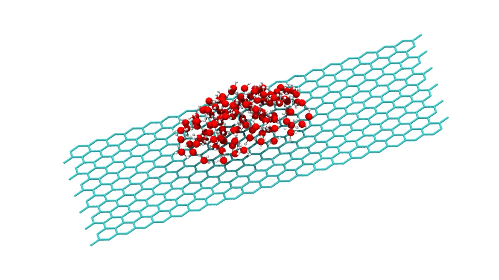
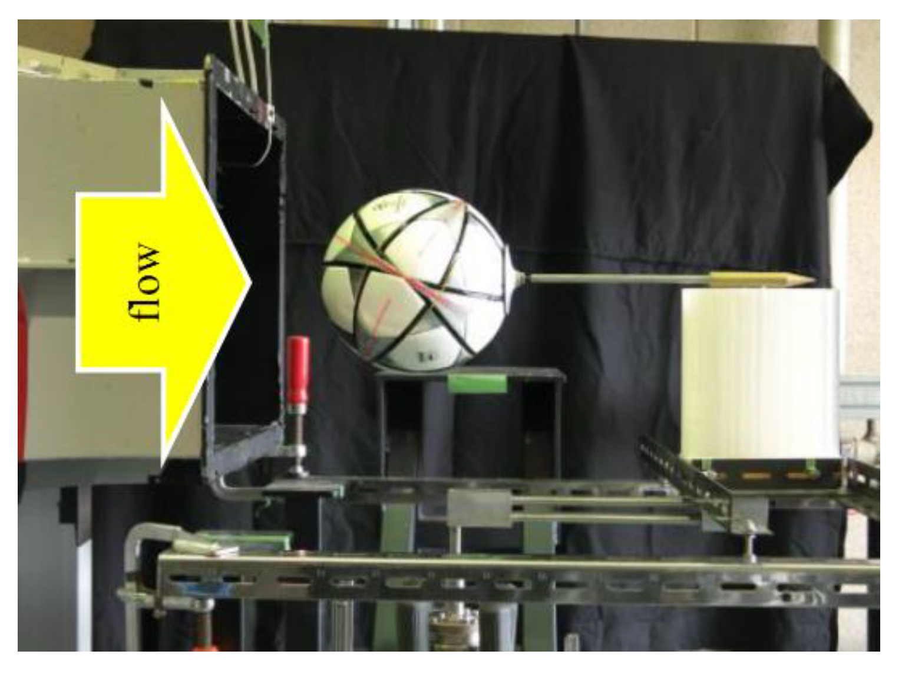
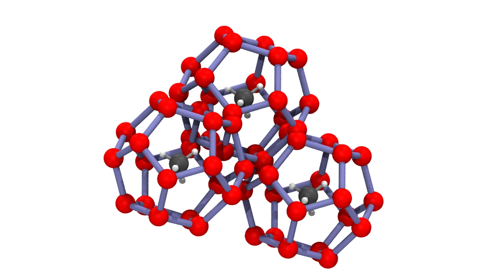
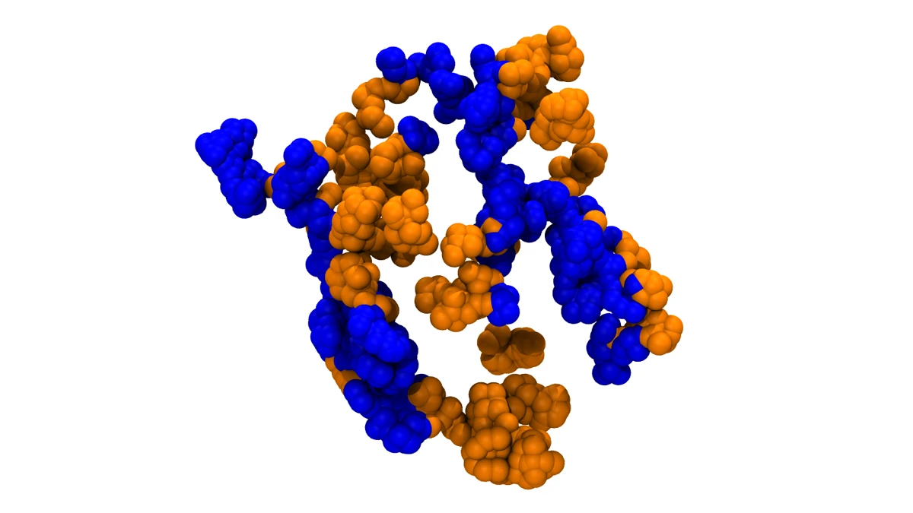

研究紹介画像テスト
研究ページの画像差し替え候補を確認するためのページです。本番ページにはまだ反映していません。 分子・粒子系の候補はPDB座標をVMD/Tachyonでレンダリングし、実験系は既存の実験写真を使っています。
候補画像
マイクロ・ナノスケールの熱流体

グラフェン状の炭素格子上に水分子を配置した座標ベースの模式図です。 水は酸素1原子と水素2原子で構成し、O-H距離とH-O-H角を固定しています。
作成方法：PythonでPDB座標を生成し、VMD 1.9.4とTachyonでレンダリングしました。 流速場、温度場、電荷分布は描いていません。
VMD/Tachyon 水115分子 炭素480原子 座標ベース模式図
スポーツ熱流体力学

スポーツ系は分子可視化ソフトの対象ではないため、流線や渦構造を推測で描かず、既存の風洞実験写真を候補にしています。 画像だけから層流・乱流、剥離位置、PIVベクトル場を読み取れるような表現は避けています。
作成方法：既存サイトで使用している実験写真をそのまま参照しています。 本番ページで使う場合は、写真のキャプションを「風洞実験の様子」として扱うのが安全です。
風洞実験 既存写真 人工的な流線なし
相変化を用いたエネルギー輸送・貯蔵

512クラスレートケージの酸素ネットワークと、ケージ中心のメタン分子を可視化した模式図です。 水素位置が一意に定まらないケージ水分子は、酸素ネットワークとして表現しています。
作成方法：正十二面体ケージ3個とメタン3分子のPDB座標を生成し、VMD/Tachyonでレンダリングしました。 実際の結晶単位胞やMDスナップショットではありません。
VMD/Tachyon 5^12ケージ メタン3分子 酸素ネットワーク
機械学習・計算科学との融合

二成分の粗視化粒子配置を可視化し、局所構造や形態の分類を扱う計算科学・機械学習研究のイメージとして示しています。 青と橙は異なる粒子タイプを表します。
作成方法：粗視化粒子モデルのPDB座標を生成し、VMD/Tachyonでレンダリングしました。 実験データや特定のMDスナップショットではなく、研究テーマ説明用の模式座標です。
VMD/Tachyon 粗視化粒子 二成分形態 機械学習向け特徴抽出
生成・確認用ファイル
- 座標生成スクリプト：images/test-research-visuals/vmd_sources/generate_vmd_structures.py
- VMD用PDB：images/test-research-visuals/vmd_sources/*.pdb
- VMDレンダリング画像：images/test-research-visuals/vmd_rendered/*_web.webp
- このページは確認専用です。採用する画像が決まるまで、研究ページの画像参照は変更しません。